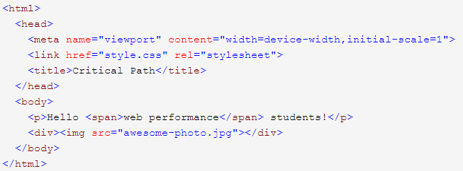
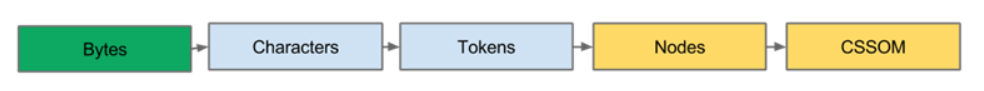
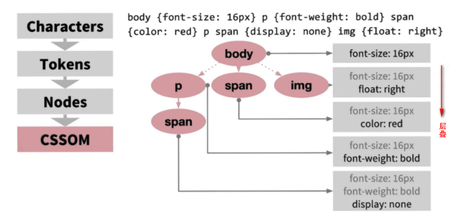

浏览器渲染页面的大致过程
从浏览器地址栏的请求链接开始，浏览器通过DNS解析查到域名映射的IP地址，成功之后浏览器端向此IP地址取得连接，成功连接之后，浏览器端将请求头信息 通过HTTP协议向此IP地址所在服务器发起请求，服务器接受到请求之后等待处理，最后向浏览器端发回响应，此时在HTTP协议下，浏览器从服务器接收到 text/html类型的代码，浏览器开始显示此html，并获取其中内嵌资源地址，然后浏览器再发起请求来获取这些资源，并在浏览器的html中显示
浏览器解析的大概的工作流程可以归纳为以下几个步骤
1.处理 HTML 标记并构建 DOM 树。
2.处理 CSS 标记并构建 CSSOM 树。
3.将 DOM 与 CSSOM 合并成一个渲染树。
4. 根据渲染树来布局，以计算每个节点的几何信息。
5. 将各个节点绘制到屏幕上。
一个包含一些文本和一幅图片的普通 HTML 页面，浏览器如何处理此页面？
转换： 浏览器从磁盘或网络读取 HTML 的原始字节，并根据文件的指定编码（如 UTF-8）将它们转换成各个字符。
Tokenizing： 浏览器将字符串转换成 W3C HTML5 标准规定的各种tokens，例如，“html”、“body”，以及其他尖括号内的字符串。每个token都具有特殊含义和一组规则。
词法分析： 发出的标记转换成定义其属性和规则的“对象”。
DOM 构建： 最后，由于 HTML 标记定义不同标记之间的关系（一些标记包含在其他标记内），创建的对象链接在一个树数据结构内，此结构也会捕获原始标记中定义的父项-子项关系：HTML 对象是 body 对象的父项，body是paragraph对象的父项，依此类推。
整个流程最终输出是页面的文档对象模型 (DOM)，浏览器对页面进行的所有进一步处理都会用到它。
浏览器每次处理 HTML 标记时，都会完成以上所有步骤：将字节转换成字符，确定tokens，将tokens转换成节点，然后构建 DOM 树。
在浏览器构建这个简单页面的 DOM 过程中，在文档的 head 中遇到了一个 link 标记，该标记引用一个外部 CSS 样式表：style.css。由于预见到需要利用该资源来渲染页面，它会立即发出对该资源的请求，然后获得一个css样式表
与处理 HTML 时一样，我们需要将收到的 CSS 规则转换成某种浏览器能够理解和处理的东西。因此，我们会重复 HTML 过程，不过是为 CSS 而不是 HTML：
CSS 字节转换成字符，接着转换成tokens和节点，最后链接到一个称为“CSS 对象模型”(CSSOM) 的树结构：
CSSOM 为何具有树结构？为页面上的任何节点对象计算最后一组样式时，浏览器都会先从适用于该节点的最通用规则开始（例如，如果该节点是 body 元素的子元素，则应用所有 body 样式），然后通过应用更具体的规则以递归方式优化计算的样式。
以上面的 CSSOM 树为例进行更具体的阐述。任何置于 body 元素内span 标记中的文本都将具有 16 像素字号，并且颜色为红色 。font-size 指令从 body 向下级层叠至 span。不过，如果某个 span 标记是某个段落 (p) 标记的子项，则其内容将不会显示。
CSSOM 树和 DOM 树合并成渲染树，它只包含渲染网页所需的节点。遍历每个DOM树中的node节点，在CSSOM规则树中寻找当前节点的样式，生成渲染树。
布局计算每个对象的精确位置和大小。
最后一步是绘制，使用最终渲染树将像素渲染到屏幕上。
从 DOM 树的根节点开始遍历每个可见节点。
某些节点不可见（例如脚本标记、元标记等），因为它们不会体现在渲染输出中，所以会被忽略。
某些节点通过 CSS 隐藏，因此在渲染树中也会被忽略。例如 span 节点上设置了“display: none”属性，所以也不会出现在渲染树中。
遍历每个可见节点，为其找到适配的 CSSOM 规则并应用它们。
最终输出的渲染同时包含了屏幕上的所有可见内容及其样式信息。
到目前为止，我们计算了哪些节点应该是可见的以及它们的计算样式，但我们尚未计算它们在设备视口内的确切位置和大小---这就是“布局”阶段。
布局流程的输出是一个“盒模型”，它会精确地捕获每个元素在视口内的确切位置和尺寸：所有相对测量值都转换为屏幕上的绝对像素。
最后，既然我们知道了哪些节点可见、它们的computed styles以及几何信息，我们终于可以将这些信息传递给最后一个阶段：将渲染树中的每个节点转换成屏幕上的实际像素。这一步通常称为"painting" or "rasterizing."。
执行渲染树构建、布局和绘制所需的时间将取决于文档大小、应用的样式，以及运行文档的设备：文档越大，浏览器需要完成的工作就越多；样式越复杂，绘制需要的时间就越长
说到页面为什么会慢？那是因为浏览器要花时间、花精力去渲染，尤其是当它发现某个部分发生了点变化影响了布局，需要倒回去重新渲染， 该过程称为reflow（回流）。
reflow 几乎是无法避免的。现在界面上流行的一些效果，比如树状目录的折叠、展开（实质上是元素的显 示与隐藏）等，都将引起浏览器的 reflow。鼠标滑过、点击……只要这些行为引起了页面上某些元素的占位面积、定位方式、边距等属性的变化，都会引起它内部、周围甚至整个页面的重新渲 染。通常我们都无法预估浏览器到底会 reflow 哪一部分的代码，它们都彼此相互影响着。
如果只是改变某个元素的背景色、文 字颜色、边框颜色等等不影响它周围或内部布局的属性，将只会引起浏览器 repaint（重绘）。
repaint 的速度明显快于 reflow。
Reflow 的成本比 Repaint 的成本高得多的多。DOM Tree 里的每个结点都会有 reflow 方法，一个结点的 reflow 很有可能导致子结点，甚至父点以及同级结点的 reflow。
当你增加、删除、修改 DOM 结点时，会导致 Reflow 或 Repaint。
当你移动 DOM 的位置，或是搞个动画的时候。
当你修改 /删除CSS 样式的时候。
当你 Resize 窗口的时候（移动端没有这个问题），或是滚动的时候。
当你修改网页的默认字体时。
当你设置 style 属性的值 （Setting a property of the style attribute）。
注：display:none 会触发 reflow，而 visibility:hidden 只会触发 repaint，因为没有发现位置变化。
参考一：reflow（回流）和repaint（重绘）及其优化
参考二：浏览器如何渲染页面？
如何尽量避免reflow？
尽可能限制reflow的影响范围。
通过设置style属性改变结点样式的话，每设置一次都会导致一次reflow。所以最好通过设置class的方式
实现元素的动画，它的position属性应当设为fixed或absolute，这样不会影响其它元素的布局。
权衡速度的平滑。比如实现一个动画，以1个像素为单位移动这样最平滑，但reflow就会过于频繁，CPU很快就会被完全占用。如果以3个像素为单位移动就会好很多。
不要用tables布局的另一个原因就是tables中某个元素一旦触发reflow就会导致table里所有的其它元素reflow。在适合用table的场合，可以设置table-layout为auto或fixed，这样可以让table一行一行的渲染，这种做法也是为了限制reflow的影响范围。